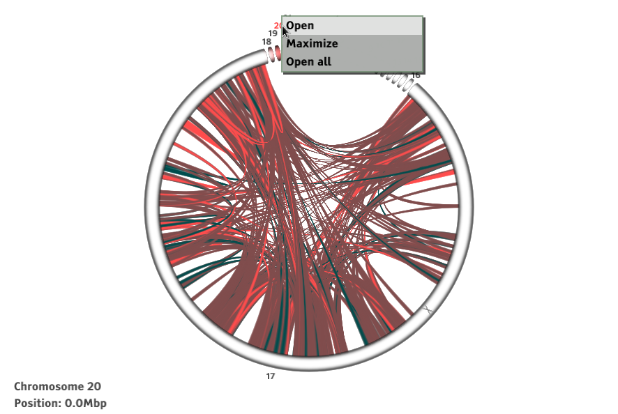
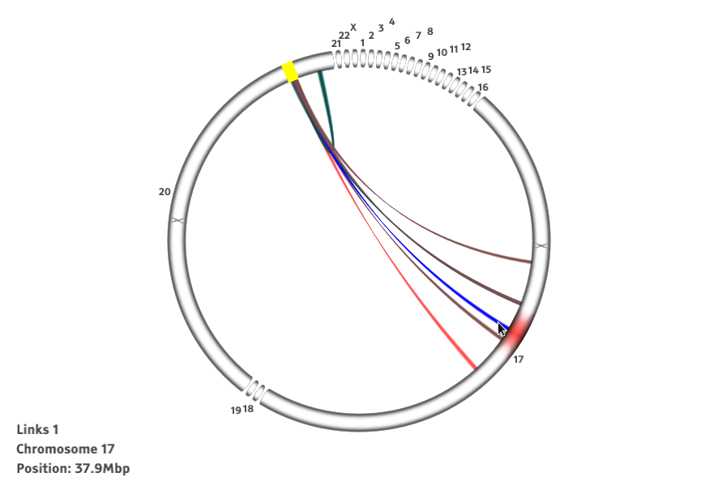

Genome Browser NG
What is Genome Browser NG?
This project develops genome browser software that builds on game-like user interface design and powerful Java-based OpenGL graphics libraries. The genome browser uses some of the basic principles found from previous similar browser software, but introduces a new kind of user interface that allows significantly more flexible data navigation.
The high level goal of the project is to develop the genome browser into a such state that it can be used in real life use cases to visualize data on fusion genes. In other words, the target set of functionalities are a focused subset of the general genome browser, but nevertheless, constitute a useful application that is an improvement over the existing genome browser software. The work will be centered on developing further the circular view mode of the prototype.
The focus of this project are fusion genes and other chromosomal rearrangements. Chromosomal rearrangements are drastic mutations where large parts of the chromosome have "switched places". The discovery and visualizations of these are of paramount importance to many disciplines in medical research, a prominent example being cancer genetics. Fusion genes are a result of small scale chromosomal rearrangements and have been observed in many cancer types. Databases like the Catalogue Of Somatic Mutations In Cancer - (COSMIC), currently contain information of more than 7000 such genes. One can distinguish several types of rearrangement events depending on if they are affecting a single gene or rather a part of, or a whole, chromosome and whether the pieces of DNA have been inverted upon fusion.
Genome browsing is based on the idea of a reference genome: to navigate genomic coordinates The reference genome is used to infer coordinates for everything that is shown in the visualization. If the actual genome under study has major rearrangements, it will result in some pairs of sequencing reads to align to completely different locations of the reference genome. For designers of genome browser software, this is a challenge. Almost all data that genome browsers show is strongly local: if you are interested in basepairs 100000-100100 of chromosome 1, then you can view only that area and will see everything relevant. But rearrangements are an exception, because you can have paired reads where one pair is in your view and the other in some completely different, remote, location. Typical browsers have troubles in communicating this to the user.
Check out the video!
Video coming later!
How do I use this visualization?

Here's the main view, where you can see the genome with connecting arcs between chromosomes.

For a better view chromosomes can be minimized or maximized from the context menu that opens with right click. 'Restore all' restores all chromosomes to their original size.
'Fullscreen' from the context menu or pressing 'F' from keyboard changes to fullscreen view.

To select a connection to view, left click a place on the genome wheel, where you want to limit the selection to and yellow selector lines limiting the shown connections appear. Now the wanted connection is easier to select. Select with left mouse click or with keyboard with left and right arrows and enter. Also the size of the limited area can be adjusted with mouse wheel.
The selected places (the ends of the selected arc) from the chromosome open into a trackview, where more data can be seen. Trackview can be zoomed with the mouse wheel. To return to the circle view click the x that closes the window.
The opened connection remains as a minimized capsule that can be left clicked to reopen the view or closed by right clicking. The line from the capsule points on the view's place on the chromosome. New minimized capsules can also be opened by left clicking outside the circle.
Command line parameters
-f [number] link filtering range (0 turns filtering off)
-g [h/r] human or rat genome data
-bam [bam-file] opens a bam-file
-bai [bai-file] opens a bai-file
-d debug-mode
-p [data path] sets the data path
Download
Note! This page is just for the internal development purposes and you have to wait for the official release to be able to easily run the program.
Grab your own copy from here or clone the source code from GitHub.
References
Data of example screenshots: Edgren et al.: Identification of fusion genes in breast cancer by paired-end RNA-sequencing. Genome Biology 2011 12:R6.Sequence Read Archive Accession: SRR064438 paired-end sequencing of BT-474 cDNA